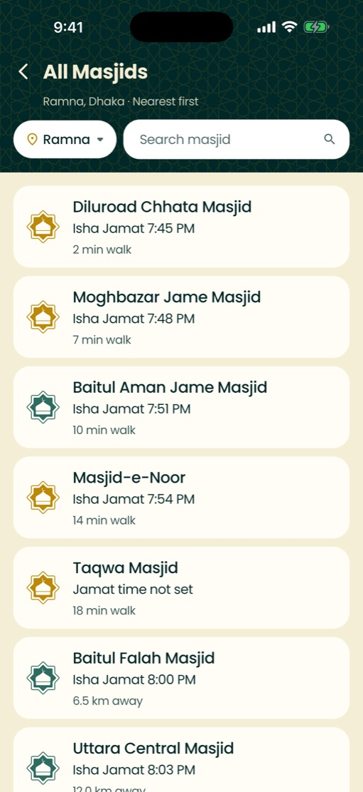
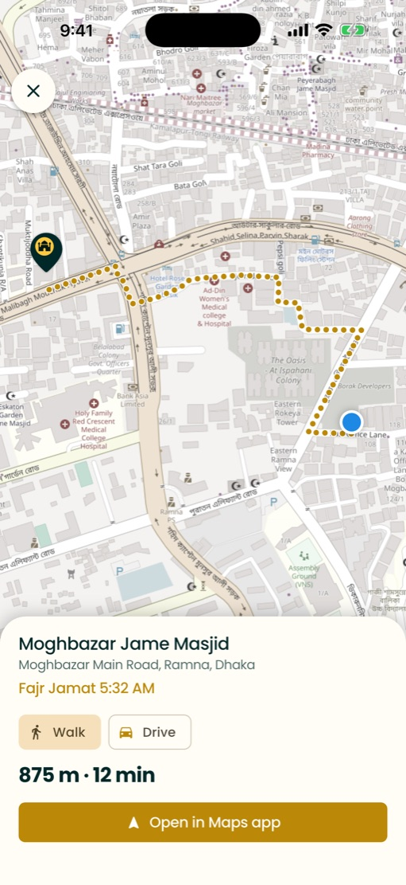
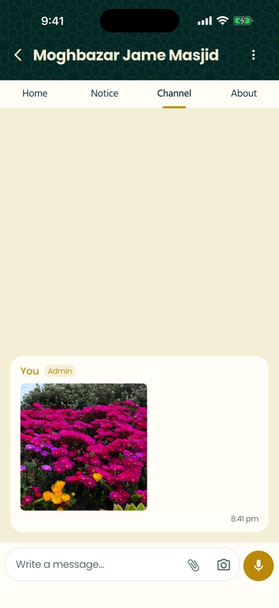
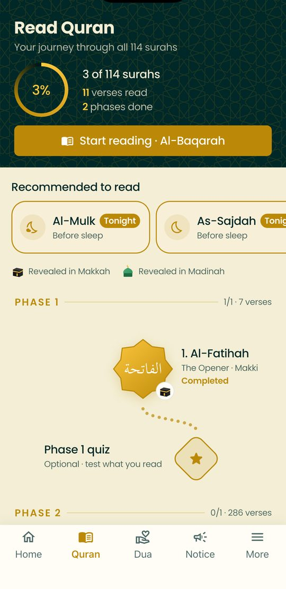
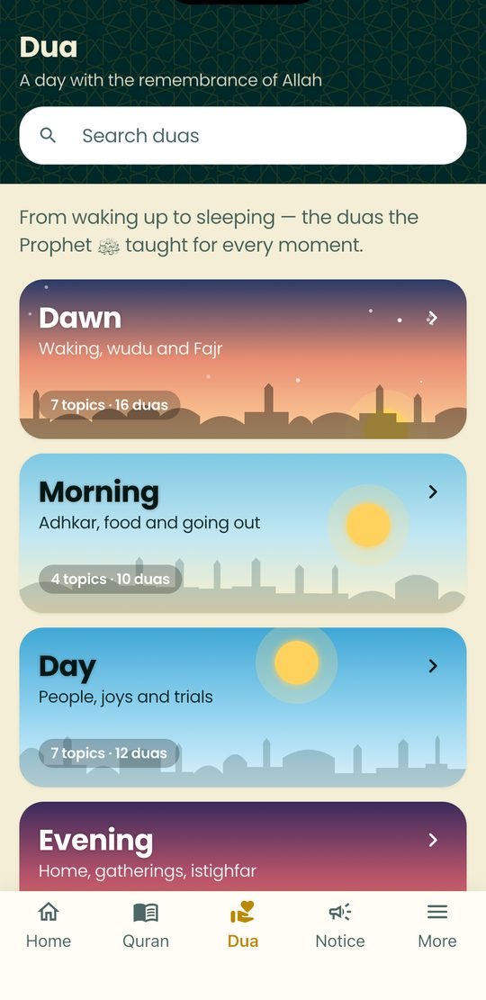

Masjid jamat times
See the jamat times of the masjids around you, get a reminder before every jamat and stay up to date with masjid notices — janaza, talim, Quran classes and more.
Latest version · How to install

Scan with your phone camera to download
Built with masjid committees, for the people who pray there.
The 5 masjids nearest to you on Home, and every masjid of your thana — or any thana in Bangladesh — sorted by walking time, each with its own jamat time.
Follow your masjid and get notified 15, 30 or 45 minutes before every jamat — even when the app is closed. Followed masjids wear a gold badge.
A Notice tab with search: janaza, talim, Quran classes, mahfil and recruitment notices from verified masjids only.
Accurate waqt for your location with a live countdown, forbidden times, Tahajjud and Duha.
Sign in with email or Google to keep followed masjids and reminders on every phone. Reset your password or delete your account anytime.
Every masjid is pinned at its exact spot — from inside with GPS or on the map — and checked by our team before it goes public.
A calm cream theme for the day and a premium deep-green dark theme for Fajr and Isha — or follow your phone.
Bangla, English, Arabic, Urdu, Hindi, Indonesian, Malay, Turkish and Spanish — with trusted Quran translations for each and Bangla digits and day-parts.
Join your masjid's channel to learn the Fard ʿAyn under its Imam and Khatib. Photos, files and voice-typed messages — hold the mic, speak, and it's sent — arrive as notifications.
All 114 surahs in Mushaf order and script, with Bangla or English meaning, word-by-word, verse-by-verse recitation by famous qaris, and quick jumps between surahs.
An open Quran on its rehal on Home — points of light rise from it as you read each day. Keep your streak, earn achievements and take optional quizzes.
Its own Dua tab: dawn, morning, day, evening and night, each with its topics and authentic duas from Hisn al-Muslim — with search, audio and references.
See the walking or driving route to any masjid on the map, with distance, time and its next jamat — then continue in Google Maps if you like.
Masjids across all 64 districts. Live near one? Tap “I want to update jamat time” — the app checks you're within 2 km — and keep its times right for everyone. Missing masjid? Add it.
Notices and channel messages in one inbox, new ones marked until you read them, a count on the bell — and push alerts even when the app is closed.
Designed in the colours of the masjid — and fully in Bangla.





Free. No ads. Works on Android 6+ and iPhone (iOS 15+). This is a beta — your feedback helps us improve.
All versions & release notes: GitHub Releases
Open your phone camera and point it at the code. Android downloads the app, iPhone opens the install guide.
Yes. Muslimin is completely free, with no ads.
Yes — a free account with email or Google. It takes a few seconds and keeps your followed masjids and reminders safe and synced across phones. You can delete it anytime from the app.
On the Sign In screen tap “Forgot password?”, enter your email and we will send you a reset link.
To show the masjids near you and calculate accurate prayer times. Your location stays on your phone.
On Android open More → About the App → App version and tap the download button when an update is available. Or download again from this page — your data stays.
Go to More → App Settings → Appearance and choose Dark, Light or System.
Five tabs: Home (prayer times, nearby masjids, daily Quran), Quran, Dua, Notice and More (account, achievements, followed masjids, settings).
Yes. Muslimin lists over 10,000 masjids across Bangladesh. If you live near one, open it and tap “I want to update jamat time”. The app checks that you are within 2 km, then you can add or correct its times, staff and maktab — type them or snap the masjid's time board.
Open the masjid and tap “Report a problem”. Every change is recorded, and our team checks reports and can undo wrong changes.
That is normal for apps downloaded outside the Play Store. The APK is signed by us and published on our official GitHub page.